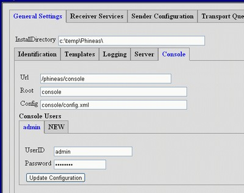

This guide is written to be a hands on step by step description for configuring Phineas. It assumes you have a basic understanding of concepts like digital certificates, HTTP/HTTPS protocols, XML, and PHIN-MS terminology. The keyword here is HOW. To successfully configure Phineas (or most software) you generally need to know WHAT you want to configure and WHY you need to configure it. A careful read through the Phineas HELP documentation will provide some of this information. And please take the time to read through the rest of this General Information as HOW TO's common to all procedures will be found here.
I'll try to stick to the terms "Sender" and "Receiver" to identify to two primary functions of Phineas (e.g. sending files and receiving files). However, you should consider these to be synonymous with the more commonly used "Client" (a.k.a. "Sender") and "Server" (a.k.a. "Receiver") terminology. This is especially helpful to remember when studying external documentation (openSSL for example).
Finally, this is not intended to be an exhaustive guide. Configuration items that are used for "tuning" or changing behavior that is not specific to establishing transport are not covered here.
The following also assumes you are using a more or less stock console configuration. Since the console is user configurable, you may see different naming or positions for these settings. Some may even be missing if Phineas configuration has been "locked down". Again, refer to the HELP documentation for a complete description of the various values within the XML configuration.
To access the console from the GUI, right click the Phineas Icon
in the bottom right hand corner service tray. From that menu
pick "console" and your default browser will open. If you are not
running the GUI, or want to access the console directly from
a browser, the default (case sensitive) URL looks something like...
https://localhost:4443/Phineas/console/console.htmlReplace the host, protocol, port, and console path based on how you have modified the Phineas configuration. If you have secured the console your browser will prompt you for the console user/password (default "admin" and "changeit").
You are now ready to inspect and update the Phineas configuration. Some common navigation and operation you should know are:
As mentioned above, you need to know WHAT to configure if you have any hope of getting things to work. Here is a list and HOW to get it.
All installations minimally need the following. Depending on the endpoints you intend to communicate with, they may be self determined or provided. All are set to default values in a fresh install:
If you are setting up a sender, the receiver's organization (for example the CDC) should provide or suggest how to obtain the following:
If you are setting up a receiver, you need to define and provide the values above to your senders. Note any certificates provided should NOT contain private keys. And please don't email Passwords. Use the phone! The sender should subsequently provide you with a CPA and optional PEM encoded authentication certificate which you would install in your server's SSL AuthFile.
Certificates are used for SSL (HTTPS) negotiations, authentication, payload encryption, and digital signitures. As such they are an important part of the Phineas security model.
There are six possible certficate (files) involved. Three used by the sender and three used by the receiver. The have mostly analogous functions, but complement each other. For example, the sender normally has the receiver's certificate in it's certificate authority and vice versa. As programmers we are taught to never exceed 7 variables in a function, since that's about what the human mind is normally capable of dealing with simultaneously. This is pushing that limit (:-).
For a receiver these are the important certificates...
For a sender these are the important certficates...
Be sure you have first read and understand the certificate HELP documentation. The following examples use openSSL and standard MS commands. Most of what follows may also be done using browser tools. Consult with your browser documentation for those procedures. Operations done with PKCS12 files will prompt you for a password. I'll use the stock Phineas certficates as examples.
Both the sender (Folder Map) and receiver (Service Map) may be configured to use a data filter. The filter can be any non-interactive program you find useful for manipulating data as it comes or goes in Phineas.
Enter a command in the Filter box just as you would enter it into a Command window prompt, with the following differences:
Since filters are simply stand-alone programs, you can test your filters independent of Phineas from a Command window. Use redirection for testing actual payload files before installing them into the configuration. Some examples of filters follow:
The Phineas "server" is required for using either a receiver, or the console. As a result some of it's functions overlap. In particular, the receiver and console share the same "listen" ports and SSL security settings.
The server secures general sessions using HTTPS (SSL) and is in fact a stand-alone (albeit limited functoning) web server. Set up the server SSL connection under the General Settings => Server tab.
Fill in the SSL Port (443 is the standard HTTPS port). Make sure it doesn't conflict with other services (like IIS or Apache!). Set the SSL CertFile to your server certificate. This can be one issued by the CDC, one obtained from a certficate authority (like AddTrust or Thawte), or self signed. It can be in PKCS12, DER, or PEM format. Set the SSL KeyFile to your private key. This is often the same file as the certficate. Enter the SSL Password used to encrypt the certificate and/or keyfile (they must both use the same password).
Phineas uses files that have one or more PEM encoded certficates for authenticating SSL connections. This authentication is performed by either side of the connection (sender or receiver) based on whether an authorization file has been specified. The server (receiver) authenticates browsers and/or sender clients by setting SSL Auth File in the General Settings => Server tab (see above)
The console is secured in a standard installation with user "admin" and password "changeit". It uses HTTP basic authentication where a web browser pops open a login window. As such it should normally be used with HTTPS (SSL), since the password and user ID are otherwise passed in clear text over the internet.
Access the console user configuation using the Server Settings => Console tab and modify tabs under Console Users. To delete a console user simple remove the User ID. To add one use the NEW tab. To modify one change either the User ID or Password of the selected entry.
As mentioned above, general security associated with the HTTPS/SSL connection to a receiver are shared with and managed by the server. However, additional settings may be managed within the Receiver Services tab.
Also known as "client authentication", this function is configured and performed by the server (see Client Authentication above).
The receiver can has it's own list of user/passwords for HTTP basic authentication with senders. When using this you would provide each sender with the User ID and Password you set under the Service Users section of the Receiver Services => Receiver Settings tab.
The Url path you provide to a sender is set under the Service Users section of the Receiver Services => Receiver Settings tab.
Service Maps are used by the receiver to determine how or if incoming messages should be received. They must include a Directory (folder) path where the messages get stored, the Queue used to log incoming message information, and a Service and Action provided to senders and used to route the incoming message.
Sender's may encrypt payloads using the public key from a receiver's certificate. Typically the receiver simply uses it's server certificate, but may optionally provide different (possibly privately distributed) certificates for payload encryption. Select "certificate" for the Encryption Type and fill in the Encryption Password and Encryption Unc with the file name of the certificate (private key).
As noted above, the receiver must provide you with information needed to configure Routes (connections). Set the PartyId, Host, Path, Port and Protocol as provided by the receiver. You should generally leave the Cpa blank; it will be auto-filled using PHIN-MS naming conventions when you Update the configuration. Otherwise, the Cpa will be named with whatever you fill in.
If you Export CPA a file will be created that you can provide to the receiver. The Cpa will be created in the folder indicated by General Settings => Templates => CpaDirectory. This will also Update the configuration.
Set the Authentication Type to "certificate", enter the Authentication Password used to encrypt the certificate and set the Authentication Unc to the certificate file in Sender Configuration => Routes tab. This is typically the certificate issued to you by the CDC, but may be any certficate that the receiver will authenticate.
Set the Authentication Type to "basic", enter the Authentication Id and Authentication Password provide by the receiver in Sender Configuration => Routes tab.
Add the desired receiver's PEM encoded certificates to the sender's certificate authority file. Set the Certificate Authority to the PEM authority file in Sender Configuration => Service Settings. Note that all sender Routes share the same server authentication authority (just as all receiver share the same sender authentication authority).
The Sender Configuration => Maps tab provides a set of folder maps. A folder map is used to select files for transmission. You may generally leave the Queue and Processor to defaults. Set Folder to the location of files you intend to send. It may include wild cards to select files. Set Processed to the folder where sent files get moved and Acknowledged to the folder where receiver acknowlegments are stored.
Set the Route to the one created for your receiver (see above) and set the Service, Action, and (optionally) Arguments to those provided by the receiver.
If payload encryption is desired, set the Encryption Type to "certificate", enter the Encryption Password used to encrypt the certificate and set the Encryption Unc to the certificate file provide by the receiver.